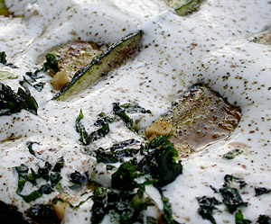

Persische Zucchini
5,5 von 6die zucchini längs geschnitten in olivenöl braten und etwas abtropfen und auf teller anrichten. knoblauch mit kurkuma und kreuzkümmel abraten und mit etwas bouillon ablöschen. einkochen lassen und über die zucchini geben. etwas joghurt darüber und mit salz, pfeffer, knoblauch und angedünsteter minze abschmecken.
